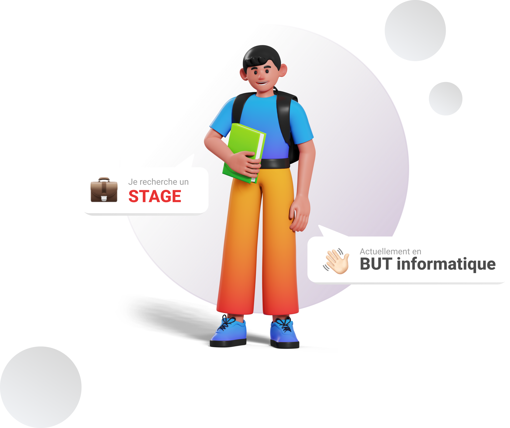
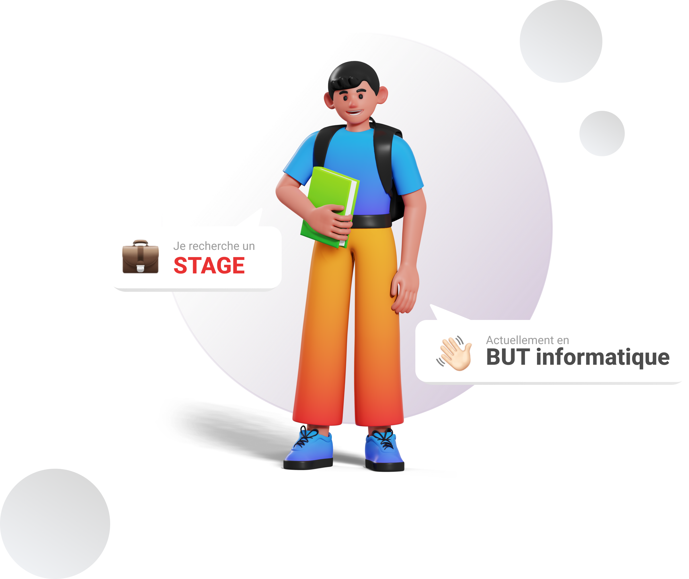

Au cours de mes années d'étude d'informatique, j'apprécie étudier et découvrir de nouveaux langages ce qui me permet de réaliser des projets dans lesquels je m'épanouis. En passant par le développement d'application mobile/web, l'utilisation et la gestion de base de données ou encore la gestion de projet en méthode agile, j'aime allier ma créativité avec mes compétences informatiques afin de réaliser au mieux ce qui m'est confié.


Vous pouvez découvrir, ci-dessus, des réalisations faites lors de travaux pratiques de plusieurs mois, certains seuls et d'autre au sein d'une équipe. (cliquez sur la carte)


Passionné depuis toujours par l'informatique et le design, je m'épanouis actuellement en BUT informatique. Dans le cadre de ma formation, je suis à la recherche d'une alternance pour ma troisième année de BUT. J'aime à la fois de développement, mais j'apporte une importance particulière au design/ interface graphique.